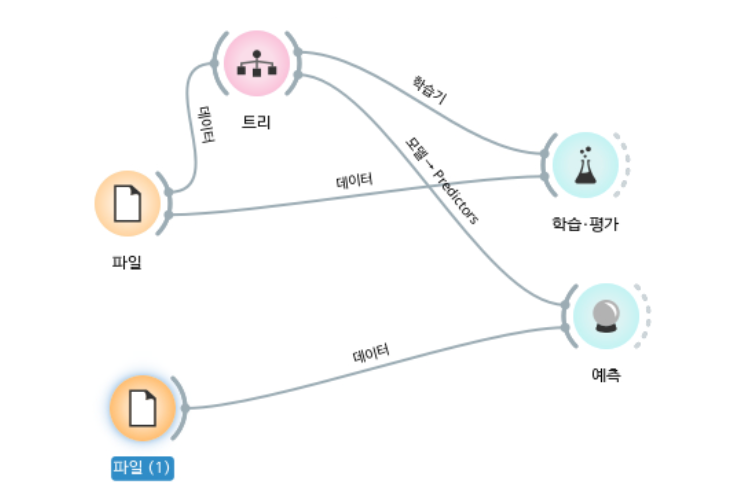
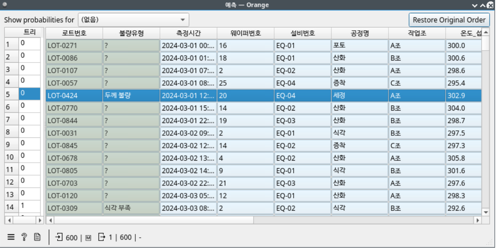

모델 평가와 새 데이터 예측
오늘의 질문: "내가 만든 모델은 처음 보는 새로운 데이터에서도 믿을 만할까?"
- 쉬운 예제: 야외 수업 기록
- 116일
- 쉬운 예제: 예보된 새 날
- 7일
- 반도체: 연습문제(train)
- 588건
- 반도체: 모의고사(test)
- 147건
- 반도체: 새 로트
- 9건
오늘의 학습 목표
점수를 제대로 읽기
새 데이터 예측하기
과정 전체 되짚기
- 정확도를 기준선(찍기 점수)·혼동행렬과 함께 읽는다.
predict()로 정답이 없는 새 데이터를 예측하고, 열 구성이 학습 때와 같아야 하는 이유를 말한다.predict_proba()로 확신의 정도를 보고, Orange3 결과와 다를 수 있는 이유를 말한다.- 1~10차시의 큰 줄기를 한 문장으로 정리한다.
왜 이걸 배워야 할까?
| 시험 보는 학생 | 오늘의 모델 | 채점할 수 있나? |
|---|---|---|
| 연습문제를 풀며 공부 | 연습문제(train)로 학습(fit) | - |
| 모의고사 | 모의고사(test)를 맞혀 보기 | 있다. 정답지가 있다 |
| 실제 시험 | 새 데이터 예측(predict) | 아직 없다. 실제 결과가 나와야 안다 |
개념은 쉬운 예제(야외 체육 수업)로 익히고, 끝에서 반도체 데이터로 확인하기(STEP 05)로 핵심만 확인한다. 실습지는 모두 반도체 문제다.
지난 시간 복습
- 9차시: 단서(Feature)와 정답(Label)을 나누고, train 80% / test 20%로 나눠 결정 트리(스무고개 모델)를 학습시켰다.
- 오늘은 같은 설정(
random_state=42)으로 모델을 다시 만들어 똑같은 결과에서 시작한다.
오늘의 두 데이터(모두 교육용 가상 데이터)
| 쉬운 예제: 야외 체육 수업 | 반도체 공정 기록(9차시 데이터) | |
|---|---|---|
| 학습 파일 | week10_easy_outdoor_class_train.csv(120일) | week09_pass_fail_train.csv(750건) |
| 새 데이터(정답 없음) | week10_easy_outdoor_class_new_days.csv(예보된 7일) | week09_new_lots_to_predict.csv(새 로트 9건) |
| 단서(Feature) | 최고기온_섭씨, 습도_pct(관계없게 만든 비교용 열), 풍속_m_s, 강수량_mm | 온도_섭씨, 압력_Pa(가상 값이라 크기는 해석하지 않음), 가스유량_slm, 두께_nm, 진공도_mTorr(공기를 많이 뺄수록 작다), 습도_pct |
| 정답(Label) | 진행여부: 1 = 진행, -1 = 취소 | 합격여부: 1 = 합격, -1 = 불합격(1~8차시와 같다) |
-1은 "불합격 예상"(쉬운 예제는 "취소 예상"). 확률의 열 순서만 따로 확인한다(STEP 04).
9차시 모델 다시 만들기
easy_로 시작한다. 반도체 코드(STEP 05)는 easy_를 떼고 파일·열 이름, 새 데이터 이름(new_days → new_lots)을 바꾼 모양이다.
쉬운 예제 — 야외 체육 수업 모델 다시 만들기
import pandas as pd
from sklearn.model_selection import train_test_split
from sklearn.tree import DecisionTreeClassifier
easy_df = pd.read_csv("../../data/weekly/week10/week10_easy_outdoor_class_train.csv", encoding="utf-8-sig").dropna()
print(easy_df.shape)
easy_feature_cols = ["최고기온_섭씨", "습도_pct", "풍속_m_s", "강수량_mm"]
easy_X = easy_df[easy_feature_cols] # 단서(Feature) 4개
easy_y = easy_df["진행여부"] # 정답(Label): 1 = 진행, -1 = 취소
print(easy_X.shape)
easy_X_train, easy_X_test, easy_y_train, easy_y_test = train_test_split(
easy_X, easy_y, test_size=0.2, random_state=42, stratify=easy_y
)
print(len(easy_X_train), len(easy_X_test))
easy_model = DecisionTreeClassifier(max_depth=4, random_state=42)
easy_model.fit(easy_X_train, easy_y_train)(116, 6) (116, 4) 92 24 DecisionTreeClassifier(max_depth=4, random_state=42)
읽자마자 .dropna()를 이어 붙여 빈칸 있는 4일을 지웠다(116일). 단서 4개, train 92일 / test 24일. 마지막 줄은 학습을 마친 모델의 설정이다(오류 아님).
모델 평가 — 정확도만 보면 속는다
- 정확도(Accuracy) = 맞힌 개수 ÷ 전체 개수. 모의고사 점수다.
- 기준선(baseline) = 가장 흔한 답으로 전부 찍었을 때의 점수. 모델은 적어도 찍기보다 나아야 한다.
쉬운 예제 — 야외 수업 모델의 점수 읽기
from sklearn.metrics import accuracy_score
easy_pred = easy_model.predict(easy_X_test)
easy_accuracy = accuracy_score(easy_y_test, easy_pred)
print(f"모델 정확도: {easy_accuracy:.1%}")
print(easy_y_test.value_counts())
easy_baseline = (easy_y_test == 1).mean()
print(f"기준선(무조건 진행이라고 찍기) 정확도: {easy_baseline:.1%}")모델 정확도: 91.7% 진행여부 1 17 -1 7 Name: count, dtype: int64 기준선(무조건 진행이라고 찍기) 정확도: 70.8%
(easy_y_test == 1).mean()은 진행(1)의 비율이다. 전부 진행이라고 찍어도 17 ÷ 24 = 70.8%.- 모델은 91.7%(22일)로 찍기보다 5일 더 맞혔다.
혼동행렬 — 어디서 맞히고 어디서 틀렸나
맞힘·틀림을 네 칸으로 센 표다. labels=[1, -1]이면 줄 = 실제(위 1, 아래 -1), 칸 = 예측(왼쪽 1, 오른쪽 -1)이다.
쉬운 예제 — 야외 수업 모델의 혼동행렬
from sklearn.metrics import confusion_matrix
easy_cm = confusion_matrix(easy_y_test, easy_pred, labels=[1, -1])
print(easy_cm)[[16 1] [ 1 6]]
| 모델: 진행(1) | 모델: 취소(-1) | 합계 | |
|---|---|---|---|
| 실제 진행(1) | 16 — 맞힘 | 1 — 비 12.1mm인데 수업했던 날을 취소라 함 | 17 |
| 실제 취소(-1) | 1 — 놓침(바람 9.2m/s인 날) | 6 — 잡음 | 7 |
- ① 찍기보다 나은가? — 91.7% vs 70.8%, 5일 더.
- ② 찾을 것(취소)을 몇 개 잡았나? — 7일 중 6일. ③ 멀쩡한 것을 몇 개 잘못 잡았나? — 17일 중 1일.
새 데이터 예측하기 — predict()
새 데이터는 아직 결과가 없어 정답 열이 없다. 모델에 단서를 주고 답을 받는 것이 예측(predict)이고, 채점은 실제 결과가 나와야 할 수 있다.
쉬운 예제 — 예보된 7일의 수업 예측하기
new_days = pd.read_csv("../../data/weekly/week10/week10_easy_outdoor_class_new_days.csv", encoding="utf-8-sig")
print(new_days.shape)
print(new_days)
easy_X_new = new_days[easy_feature_cols]
print(easy_X_new.shape)
new_days["예측_진행여부"] = easy_model.predict(easy_X_new)
print(new_days[["날짜", "최고기온_섭씨", "풍속_m_s", "강수량_mm", "예측_진행여부"]])(7, 5)
날짜 최고기온_섭씨 습도_pct 풍속_m_s 강수량_mm
0 2024-07-30 26.0 60.0 3.0 0.0
1 2024-07-31 24.5 85.0 4.2 15.0
2 2024-08-01 33.5 55.0 2.0 0.0
3 2024-08-02 22.0 70.0 10.5 0.0
4 2024-08-03 27.5 75.0 5.0 3.0
5 2024-08-04 30.5 65.0 8.5 0.0
6 2024-08-05 25.0 50.0 2.5 0.0
(7, 4)
날짜 최고기온_섭씨 풍속_m_s 강수량_mm 예측_진행여부
0 2024-07-30 26.0 3.0 0.0 1
1 2024-07-31 24.5 4.2 15.0 -1
2 2024-08-01 33.5 2.0 0.0 -1
3 2024-08-02 22.0 10.5 0.0 -1
4 2024-08-03 27.5 5.0 3.0 1
5 2024-08-04 30.5 8.5 0.0 1
6 2024-08-05 25.0 2.5 0.0 1
예보 파일은 정답 열 진행여부가 빠진 5열이다. 7월 31일(비)·8월 1일(폭염)·8월 2일(강풍)만 -1(취소 예상).
- 학습 때 쓴 단서 목록(
easy_feature_cols, 반도체는feature_cols)을 그대로 다시 쓴다. 6칸짜리 답안지로 연습한 채점기에 8칸짜리 답안지를 내면 받아 주지 않는 것과 같다. - 표를 통째로 넣으면
ValueError: The feature names should match those that were passed during fit.가 나고, 아래에 학습 때 못 본 열(쉬운 예제는- 날짜, 반도체는Feature names unseen at fit time: - 공정명 - 설비번호)이 표시된다.
확률까지 보기 — predict_proba()
- 같은 "비 안 옴"이라도 강수확률 5%와 40%는 다르다.
predict_proba()는 행마다 확률 두 개(합 1)를 주고,predict()는 50%를 넘는 쪽을 고른다. - 열 순서는
model.classes_를 따른다. 오늘은[-1 1]이라 0번 열 = -1(취소·불합격)일 확률이다.
쉬운 예제 — 수업이 취소될 확률 보기
easy_proba = easy_model.predict_proba(easy_X_new)
print(easy_model.classes_)
print(easy_proba.round(3))
new_days["취소_확률"] = easy_proba[:, 0].round(3) # classes_ [-1 1]의 0번 열 = 취소(-1)
print(new_days[["날짜", "강수량_mm", "풍속_m_s", "예측_진행여부", "취소_확률"]])easy_proba[:, 0]은 "모든 줄(:)의 0번 칸"을 꺼낸다는 뜻이다. 표에서 왼쪽 세로줄 하나만 잘라 오는 것과 같다(9차시 cm[1][0]은 칸 하나, 여기서는 세로줄 전체).
[-1 1]
[[0.016 0.984]
[1. 0. ]
[1. 0. ]
[1. 0. ]
[0.375 0.625]
[0.016 0.984]
[0.016 0.984]]
날짜 강수량_mm 풍속_m_s 예측_진행여부 취소_확률
0 2024-07-30 0.0 3.0 1 0.016
1 2024-07-31 15.0 4.2 -1 1.000
2 2024-08-01 0.0 2.0 -1 1.000
3 2024-08-02 0.0 10.5 -1 1.000
4 2024-08-03 3.0 5.0 1 0.375
5 2024-08-04 0.0 8.5 1 0.016
6 2024-08-05 0.0 2.5 1 0.016
결정 트리는 새 날을 "비슷한 과거 날 묶음"에 넣고 그 묶음의 취소 비율을 확률로 말한다(강사가 train 92일로 확인).
| 예보된 날 | 들어간 묶음 | 묶음 안 train 날 | 취소 확률 |
|---|---|---|---|
| 7월 31일 | 비 4.75mm 초과 | 17일 중 17일 취소 | 1.000 |
| 8월 1일 | 비 적음 + 최고기온 31.75도 초과 | 5일 중 5일 취소 | 1.000 |
| 8월 2일 | 비 적음 + 덥지 않음 + 바람 9.9m/s 초과 | 1일 중 1일 취소(근거 1일뿐) | 1.000 |
| 8월 3일 | 약한 비(1~4.75mm) + 덥지 않음 + 바람 약함 | 8일 중 3일 취소 | 0.375 |
| 7월 30일, 8월 4일, 8월 5일 | 비 1mm 이하 + 덥지 않음 + 바람 9.9m/s 이하 | 61일 중 1일 취소 | 0.016 |
8월 3일은 진행 예측이지만 취소 확률 37.5% — 실내 수업도 준비해 두자는 뜻으로 읽는다. 기록이 적은 묶음(8월 2일)의 확률은 그대로 믿지 않는다.
반도체 데이터로 확인하기
쉬운 예제와 같은 코드를 반도체 데이터에 적용해 오늘의 질문 "믿을 만할까?"에 답한다. 강사가 시연하고, 학생은 실습지·노트북 5~6단계에서 직접 푼다.
준비 — 9차시 반도체 모델 다시 만들기
df = pd.read_csv("../../data/weekly/week09/week09_pass_fail_train.csv", encoding="utf-8-sig").dropna()
print(df.shape)
feature_cols = ["온도_섭씨", "압력_Pa", "가스유량_slm", "두께_nm", "진공도_mTorr", "습도_pct"]
X = df[feature_cols] # 단서(Feature) 6개
y = df["합격여부"] # 정답(Label): 1 = 합격, -1 = 불합격
print(X.shape)
X_train, X_test, y_train, y_test = train_test_split(
X, y, test_size=0.2, random_state=42, stratify=y
)
print(len(X_train), len(X_test))
model = DecisionTreeClassifier(max_depth=4, random_state=42)
model.fit(X_train, y_train)(735, 9) (735, 6) 588 147 DecisionTreeClassifier(max_depth=4, random_state=42)
공장 말로: 로트 기록 735건(빈칸 15건 제외)으로 train 588건을 공부시키고 test 147건은 채점용으로 남겼다.
확인 1 — 찍기보다 얼마나 나은가?
pred = model.predict(X_test)
accuracy = accuracy_score(y_test, pred)
print(f"모델 정확도: {accuracy:.1%}")
print(y_test.value_counts())
baseline = (y_test == 1).mean()
print(f"기준선(무조건 합격이라고 찍기) 정확도: {baseline:.1%}")모델 정확도: 80.3% 합격여부 1 116 -1 31 Name: count, dtype: int64 기준선(무조건 합격이라고 찍기) 정확도: 78.9%
- 모델 80.3%(118건) vs 찍기 78.9%(116 ÷ 147) — 2건 차이. 쉬운 예제(5일 차이)보다 훨씬 작다.
- 주의:
y_test == -1로 쓰면 오류 없이 "전부 불합격" 점수(21.1%)가 나온다.
확인 2 — 불합격을 몇 개 잡았나?
cm = confusion_matrix(y_test, pred, labels=[1, -1])
print(cm)[[109 7] [ 22 9]]
| 모델: 합격(1) | 모델: 불합격(-1) | 합계 | |
|---|---|---|---|
| 실제 합격(1) | 109 — 맞힘 | 7 — 멀쩡한 로트를 불합격이라 함 | 116 |
| 실제 불합격(-1) | 22 — 불합격을 놓침 | 9 — 불합격을 잡음 | 31 |
세 가지 질문: ① 2건 더 ② 불합격 31건 중 9건만 잡음(22건 놓침) ③ 116건 중 7건. 공장 말로: 불량을 놓치면 안 되는 공장이라면 아직 믿고 쓰기 어렵다.
확인 3-1 — 새 로트 9건은 어떻게 예측되나?
new_lots = pd.read_csv("../../data/weekly/week09/week09_new_lots_to_predict.csv", encoding="utf-8-sig")
print(new_lots.shape)
print(new_lots)
X_new = new_lots[feature_cols]
print(X_new.shape)
new_lots["예측_합격여부"] = model.predict(X_new)
print(new_lots[["공정명", "설비번호", "온도_섭씨", "진공도_mTorr", "예측_합격여부"]])(9, 8) 공정명 설비번호 온도_섭씨 압력_Pa 가스유량_slm 두께_nm 진공도_mTorr 습도_pct 0 식각 EQ-02 294.5 1005.1 50.04 96.46 4.02 44.4 1 산화 EQ-02 301.5 1007.2 55.68 100.65 5.38 46.8 2 식각 EQ-04 289.8 1009.2 50.69 96.19 5.14 42.0 3 포토 EQ-04 295.6 1019.5 49.10 98.97 4.96 44.6 4 식각 EQ-04 299.1 1026.4 56.25 103.10 4.86 38.8 5 포토 EQ-03 302.0 1026.1 51.59 103.76 4.81 50.9 6 산화 EQ-01 305.2 1005.6 47.16 101.69 4.35 42.7 7 산화 EQ-03 299.1 989.2 54.12 98.41 5.09 49.3 8 세정 EQ-01 300.6 1031.7 49.89 102.78 4.54 41.2 (9, 6) 공정명 설비번호 온도_섭씨 진공도_mTorr 예측_합격여부 0 식각 EQ-02 294.5 4.02 1 1 산화 EQ-02 301.5 5.38 1 2 식각 EQ-04 289.8 5.14 -1 3 포토 EQ-04 295.6 4.96 1 4 식각 EQ-04 299.1 4.86 1 5 포토 EQ-03 302.0 4.81 1 6 산화 EQ-01 305.2 4.35 1 7 산화 EQ-03 299.1 5.09 1 8 세정 EQ-01 300.6 4.54 1
공장 말로: 9건 중 2번 로트만 불합격 예상(-1)이다(온도 289.8도로 가장 낮음). 나머지 8건은 똑같이 안전할까? 확인 3-2에서 본다.
확인 3-2 — 얼마나 확신하나? 무엇이 원인 후보인가?
proba = model.predict_proba(X_new)
print(model.classes_)
print(proba.round(3))
new_lots["불합격_확률"] = proba[:, 0].round(3)
print(new_lots[["공정명", "설비번호", "온도_섭씨", "진공도_mTorr", "예측_합격여부", "불합격_확률"]])[-1 1] [[0.375 0.625] [0.076 0.924] [0.614 0.386] [0.076 0.924] [0.076 0.924] [0.076 0.924] [0.375 0.625] [0.076 0.924] [0.076 0.924]] 공정명 설비번호 온도_섭씨 진공도_mTorr 예측_합격여부 불합격_확률 0 식각 EQ-02 294.5 4.02 1 0.375 1 산화 EQ-02 301.5 5.38 1 0.076 2 식각 EQ-04 289.8 5.14 -1 0.614 3 포토 EQ-04 295.6 4.96 1 0.076 4 식각 EQ-04 299.1 4.86 1 0.076 5 포토 EQ-03 302.0 4.81 1 0.076 6 산화 EQ-01 305.2 4.35 1 0.375 7 산화 EQ-03 299.1 5.09 1 0.076 8 세정 EQ-01 300.6 4.54 1 0.076
위 불합격_확률을 막대로 옮긴 그림. 50%를 넘은 2번만 -1로 예측됐고, 합격 예측 8건 사이에도 차이가 있다.
결과 읽기 — 쉬운 예제처럼 "비슷한 과거 로트 묶음"의 불합격 비율이다(강사가 train 588건으로 확인).
| 새 로트 | 들어간 묶음 | 묶음 안 train 로트 | 불합격 확률 |
|---|---|---|---|
| 2번 | 온도 약 294도 이하 + 압력 1009.0 초과 + 가스유량 53.94 이하 | 44건 중 27건 불합격 | 61.4% → -1 예측 |
| 0번, 6번 | 온도 약 294~306도 + 진공도 약 4.42 이하 | 24건 중 9건 불합격 | 37.5% |
| 1·3·4·5·7·8번 | 온도 약 294~306도 + 진공도 약 4.43~5.5 | 382건 중 29건 불합격 | 7.6% |
- 2번의 묶음은 온도 하나가 아니라 압력·가스유량까지 여러 열을 함께 써서 정해졌다.
- 0번(EQ-02)·6번(EQ-01)은
진공도_mTorr가 4.02, 4.35로 8차시 정상 범위(4.5~5.5)보다 낮게 벗어났다. 체온이 너무 낮아도 이상인 것처럼, 범위는 아래로 벗어나도 벗어난 것이다. 묶음이 24건뿐이라 37.5%를 정확한 값처럼 믿지는 않는다.
- 아직 안 된다. 모델은 "그런 묶음에 과거 불합격이 많았다"만 기억한다.
- 근거는 새 로트의 확률이 아니라 train 비율이다(아래 표). 두 열 모두 범위를 벗어난 쪽에서 불합격이 많았다.
- 그래서 "온도와 진공도는 불합격의 원인 후보"까지만 말한다. 오늘 데이터는 교육용 가상 데이터다.
| 비교(train) | 벗어난 쪽 | 안쪽 |
|---|---|---|
| 온도 | 약 294도 이하: 65건 중 34건 불합격(약 52%) | 약 294~306도: 459건 중 56건(약 12%) |
| 진공도(온도 약 294~306도일 때) | 약 4.42 이하: 24건 중 9건(37.5%) | 약 4.43~5.5: 382건 중 29건(7.6%) |
Orange3로 재확인하기
코드로 예측한 같은 새 로트를 Orange3 예측(Predictions) 위젯에 넣어 확인한다(반도체 데이터만).
- ① 9차시 캔버스(파일(File) → 트리(Tree) → 학습·평가(Test and Score))를 열고,
합격여부가 categorical / target인지 확인한다. - ② 파일(File) 위젯을 하나 더 놓고
week09_new_lots_to_predict.csv를 연다(화면에는 "파일 (1)"). - ③ 트리(Tree) → 예측(Predictions), 파일 (1) → 예측(Predictions)으로 연결하고, Show probabilities for로 확률도 켠다.
- ④ STEP 05 확인 3의 결과와 같은지 실습지에 적는다. 확률 열이 -1과 1 중 어느 쪽인지 열 이름으로 확인한다.


두 도구의 결과가 다를 수 있는 이유
| 다른 점 | scikit-learn 코드 | Orange3 |
|---|---|---|
| 공부한 문제 수 | 연습문제(train) 588건만으로 학습 | 파일에 들어 있는 전체 행으로 학습 |
| 보는 단서 | 숫자 열 6개 | 공정명·설비번호 같은 글자 열도 단서로 쓸 수 있다 |
| 나무 키우는 규칙 | 깊이 4까지(max_depth=4) | 위젯의 기본 설정(깊이 제한 등이 다르다) |
| 빈칸 처리 | dropna()로 빈칸 있는 행을 지움 | 빈칸 있는 행도 Orange3 방식으로 다룬다 |
결과가 다르면 "한쪽이 틀렸다"가 아니라 "조건이 달랐다"로 읽는다. 어느 쪽이 맞았는지는 실제 검사 결과가 나와야 안다.
과정 전체 되짚기 — 10차시의 큰 줄기
이 과정의 뼈대. 1~3차시의 파이썬 기초는 이 네 칸을 위한 도구였다.
차시별 한 문장
| 차시 | 한 문장 정리 | 큰 줄기 |
|---|---|---|
| 1 | 공장 기록의 숫자를 변수에 담아 문장으로 말했다. "원인 후보"라는 말을 처음 만났다. | 도구 · ② 맛보기 |
| 2 | 여러 측정값은 리스트에, 이름표가 붙은 값은 딕셔너리에 담았다. | 도구 |
| 3 | if·for·함수로 합격/불합격 판정을 컴퓨터에 맡겼다. | 도구 |
| 4 | Pandas로 CSV 표를 읽고, 원하는 행만 조건으로 골라냈다. | 도구 · ① |
| 5 | 분석 전에 빈칸·중복·이상한 값부터 찾아 정리했다. | ① |
| 6 | 그래프로 숫자 표에서는 안 보이던 모양과 차이를 봤다. | ① |
| 7 | 설비별로 묶어(groupby) 수율·불량률의 차이를 확인했다. | ② |
| 8 | 두 열이 함께 움직이는지(상관관계) 보고 원인 후보를 골랐다. | ③ |
| 9 | 여러 열을 단서로 합격/불합격을 맞히는 모델을 만들었다. | ④ |
| 10 | 모델 점수를 기준선과 비교해 읽고, 처음 보는 새 로트를 예측했다. | ④ |
예측이 맞아도 원인을 안 것은 아니다
우산 든 사람이 많으면 비를 잘 맞힐 수 있지만 우산이 비의 원인은 아니다. 모델도 "진공도가 낮은 묶음에 불합격이 많았다"로 예측할 뿐이다. 그래서 결론은 "이것이 원인 후보이니 현장에서 확인하자"로 끝난다(1차시 "용의자 ≠ 범인").
실습: 모델 평가와 새 로트 예측 따라 하기
week10_student.ipynb를 위에서 아래로 실행한다. ____만 채운다. 반도체 문제는 실습지 문제 1~5와 같다.
predict()와 취소 확률. (노트북 3~4단계)핵심 용어 카드
기준선
- 한 줄 설명
- 가장 흔한 답으로 전부 찍었을 때의 점수.
- 데이터에서의 예
- 야외 수업 70.8%(모델 91.7%), 반도체 78.9%(모델 80.3%).
혼동행렬
- 한 줄 설명
- 정답과 예측을 맞힘·틀림 네 칸으로 센 표. 줄은 실제, 칸은 예측.
- 데이터에서의 예
- 반도체
[[109 7] [22 9]]— 불합격 31건 중 9건만 잡았다.
predict()
- 한 줄 설명
- 학습된 모델에 새 데이터를 넣어 답(1 또는 -1)을 받는 명령.
- 데이터에서의 예
model.predict(X_new)→ 새 로트 9건 중 2번만 -1.
predict_proba()
- 한 줄 설명
- 각 답일 확률을 돌려주는 명령. 열 순서는
classes_를 따른다. - 데이터에서의 예
classes_[-1 1]→ 0번 열이 -1의 확률(8월 3일 취소 0.375, 2번 로트 불합격 0.614).
원인 후보
- 한 줄 설명
- "이것 때문일 수도 있다"고 보여 더 확인해볼 대상. 범인이 아니라 용의자.
- 데이터에서의 예
- train에서 진공도 약 4.42 이하 묶음 24건 중 9건(37.5%) vs 옆 묶음 382건 중 29건(7.6%) 불합격 → 진공도는 원인 후보.
데이터
- 쉬운 예제:
data/weekly/week10/week10_easy_outdoor_class_train.csv(120행, dropna 후 116행),data/weekly/week10/week10_easy_outdoor_class_new_days.csv(7행, 정답 없음). - 반도체:
data/weekly/week09/week09_pass_fail_train.csv(750행, dropna 후 735행: 합격 582 / 불합격 153),data/weekly/week09/week09_new_lots_to_predict.csv(9행, 정답 없음). - 모두 교육용 가상 데이터다. 열 설명: 9차시 데이터 설명서, 10차시 데이터 설명서("생활 예제 데이터" 절).
주의할 점 & 자주 발생하는 오류
- 표를 통째로 넣거나 열 순서·개수가 다르면
ValueError: The feature names should match those that were passed during fit.가 난다(아래 줄에 문제 된 열 이름이 나온다). - 새 데이터에서 정답 열을 찾음:
KeyError: '합격여부'. 새 데이터는 채점할 수 없다. - 해결:
X_new = new_lots[feature_cols]처럼 학습 때 목록을 그대로 쓴다.
NameError: name 'model' is not defined(또는'easy_model') — 맨 위 셀부터 다시 실행한다.- 빈칸:
AttributeError: 'DecisionTreeClassifier' object has no attribute '____'/NameError: name '____' is not defined/KeyError: '____'.fit을 비우면NotFittedError: This DecisionTreeClassifier instance is not fitted yet. - 6단계 문제 5를 건너뛰면 9단계 AI 코드에서
KeyError: '불합격_확률'.
y_test == -1(21.1%),proba[:, 1](합격 확률),random_state변경은 오류 없이 다른 숫자를 낸다.- 반도체 문제에서
easy_를 떼지 않으면 쉬운 예제 숫자가 다시 나온다.
결과 정리 & 퀴즈
더 많은 문제는 실습지에 있다.
[[109 7] [22 9]](labels=[1, -1], 줄은 실제·칸은 예측)에서 "실제 불합격인데 합격이라고 놓친" 로트 수는?print(model.classes_)의 결과가 [-1 1]일 때, proba[:, 1]은 불합격일 확률이다.ValueError, C는 KeyError, D는 모의고사 데이터다.AI로 한 걸음 더 — 질문하고 코드 받아보기
- "정확도가 95%인데도 쓸모없는 모델이 있을 수 있다는데, 화재경보기 예로 설명해줘."
- "학습 데이터에서는 점수가 높은데 새 데이터에서는 점수가 낮아지는 현상을 뭐라고 불러? 초보자용으로 설명해줘."
- "새 데이터가 학습 데이터의 값 범위를 벗어나면 예측을 믿기 어려운 이유를 알려줘."
- "혼동행렬의 네 칸이 화재경보기에서는 각각 어떤 상황인지 알려줘."
- "'예측을 잘한다'와 '원인을 안다'가 왜 다른지 일상 예시 두 개로 설명해줘."
def risk_level(p):
if p >= 0.5:
return "높음"
elif p >= 0.3:
return "보통"
else:
return "낮음"
for p in new_lots["불합격_확률"]:
print(f"불합격 확률 {p:.1%} → 위험도 {risk_level(p)}")불합격 확률 37.5% → 위험도 보통 불합격 확률 7.6% → 위험도 낮음 불합격 확률 61.4% → 위험도 높음 불합격 확률 7.6% → 위험도 낮음 불합격 확률 7.6% → 위험도 낮음 불합격 확률 7.6% → 위험도 낮음 불합격 확률 37.5% → 위험도 보통 불합격 확률 7.6% → 위험도 낮음 불합격 확률 7.6% → 위험도 낮음
def·if/elif/else·for는 3차시 문법이고, :.1%는 0.614를 61.4%로 보여주는 서식이다. 실제 기준은 현장 담당자와 데이터로 정한다.
과제 — 과정 마무리
Jupyter Notebook 한 개에 작성하고, 결과가 출력된 상태로 제출한다.
feature_cols에서 열 하나를 빼거나 max_depth를 바꿔 test 정확도를 기준선(78.9%)과 비교한다. X_new도 같은 feature_cols로 다시 만든다.
핵심 질문 → 데이터 연결
- 두 도구의 예측이 같은가? 코드는 2번만 -1(61.4%), 다음은 0번·6번(37.5%). Orange3 결과는 화면에서 확인한다. 다르다면 학습 행·단서·설정·빈칸 처리가 달라서다.
- 믿을 만한가? 찍기보다 2건 더, 불합격 31건 중 9건 — 쉬운 예제(5일 더, 7일 중 6일)와 달리 그대로 믿기 어렵다. 확률 높은 로트를 먼저 확인하는 참고 자료로 쓴다.
과정을 마치며
print(pass_count) 한 줄로 시작해 처음 보는 로트까지 예측했다. 잘 살핀다 → 함께 본다 → 원인 후보를 찾는다 → 예측한다.
예측이 맞아도 원인을 안 것은 아니다. 원인은 현장에서 확인한다.